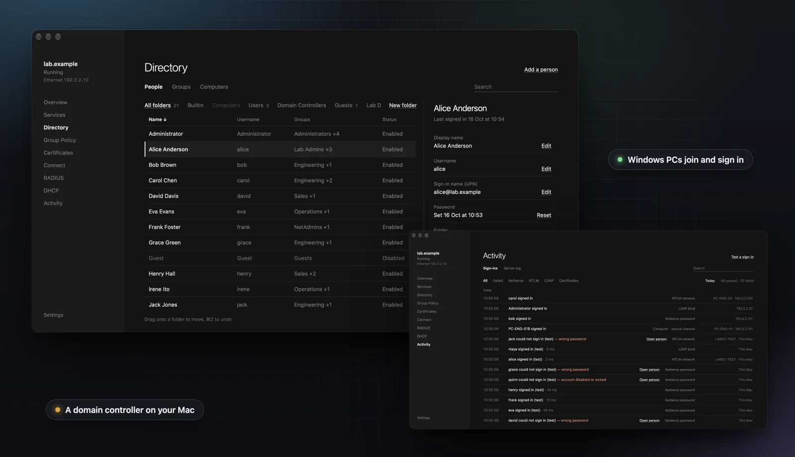
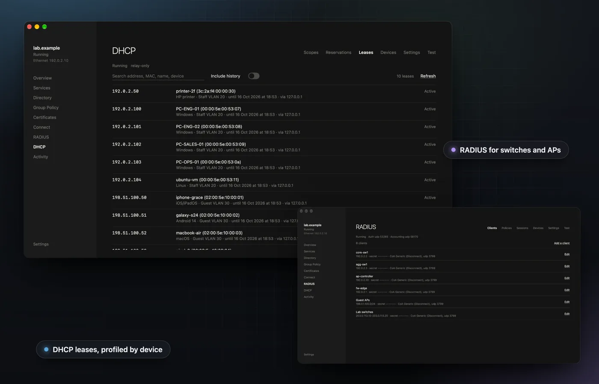
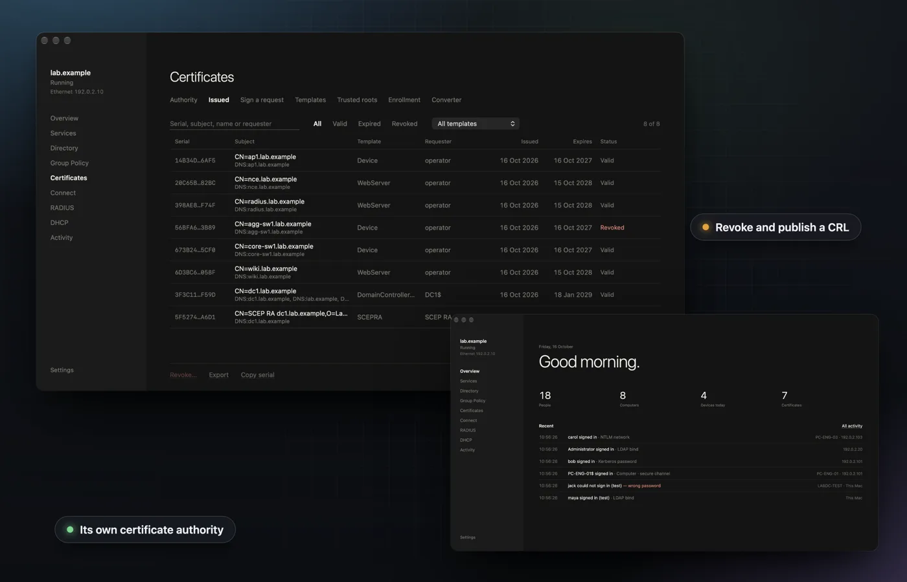

A lab domain controller, on your Mac
Written from scratch in Swift. Windows PCs join its domain, and access points and switches authenticate Wi-Fi and wired clients against the same accounts, with its own certificate authority.

Domain join for Windows 10 and 11. PCs join the domain with the DNS SRV records Windows looks for, Kerberos and NTLM sign-in, password policy and lockout. People, groups, computers and OUs live in a quiet, text-first app, with a labdc command line for scripts.
Features
What it does
DHCP server
DHCPv4 and DHCPv6 beside your existing DHCP server, reached through relays for many VLANs, with reservations, leases, dynamic DNS and device profiling that feeds RADIUS policies.

A lab certificate authority
Templates, computer and user auto-enrollment, SCEP and EST, revocation and CRLs, and a converter for PEM, DER, PKCS#12, PKCS#7 and JKS.

Also
- LDAP, LDAPS and Global Catalog Query the directory the way an application would, over LDAP, LDAPS or the Global Catalog, alongside CLDAP, SMB and secure dynamic DNS updates.
- Group Policy SYSVOL with Group Policy, so Windows PCs pick up policy as they would from a real domain. 802.1X profiles for wired and wireless are pushed to Windows by Group Policy.
- EAP-TLS, PEAP and TTLS Certificate sign-in with EAP-TLS, or PEAP-MSCHAPv2 and EAP-TTLS, over TLS 1.2 and 1.3 with fast reconnect, for WPA2 and WPA3-Enterprise, wireless and wired.
- RADIUS server and policies One RADIUS server for 802.1X. Policies with AND/OR conditions on groups, OUs, SSID, NAS and time of day can return VLANs and vendor attributes, with CoA, MAC authentication bypass and session views.
Install
Get started in a minute
macOS
- Unzip the download and drag LabDC.app into
Applications. - The build is not notarized. On first launch, right-click the app, choose Open, then confirm.
- Or run once in Terminal:
xattr -dr com.apple.quarantine /Applications/LabDC.app - Requires macOS 26 or later · Apple Silicon.
Download LabDC
More Sheep apps